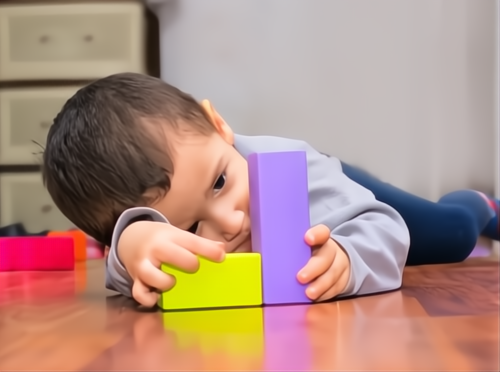
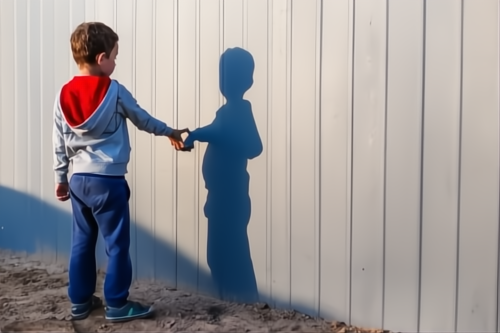

¿QUE ES AUTISTA?
Trastorno psicológico que se caracteriza por la intensa concentración de una persona en su propio
mundo
interior y la progresiva pérdida de contacto con la realidad exterior.
Los trastornos del espectro autista (TEA) son discapacidades del desarrollo causadas por diferencias
en
el cerebro.
Algunas personas con TEA tienen una diferencia conocida, como una afección genética. Todavía no se
conocen otras causas.
Los Trastornos del Espectro Autista, se definen como una disfunción neurológica crónica con fuerte
base
genética que desde edades tempranas se manifiesta en una serie de sintomas relacionados con la
interacción social, la comunicación y la falta de flexibilidad en el razonamiento y comportamientos.
¿COMO INDETIFICAR A UN NIÑO AUTISTA?
Las personas con esta discapacidad las identificamos a simple vista ya que tienen dificultad para
interactuar y comunicarse con otras personas;con los niños más pequeños podemos identificarlos
cuando le
hablamos por su nombre y aparenta indiferencia,otra podría ser que no hace ningún sonido o no dice
ninguna palabra al igual que juega solo.

DIRERENCIA ENTRE UN NIÑO AUTISTA Y UN NIÑO NORMAL
La diferencia entre un niño con autismo y un niño normal es que los niños con este trastorno
muestran
diferencias en el desarrollo cuando son bebés y niños pequeños, especialmente relacionados con sus
habilidades sociales y de lenguaje, a diferencia de otro niño, estos suelen tener retrasos en el
lenguaje, hablado o diferencias de las formas en que interactúan con sus compañeros. La mayoría de
los
niños al 1 año de edad pueden mirar inmediatamente a la dirección del objeto que un padre le a
señalado
y un niño con espectro del autismo pueden parecer ignorar a los padres esto puede hacer que los
padres tengan
cierta preocupación. La mayoría de los niños a los 15 meses de edad puede señalar objetos que
quieran
fuera de su alcance y a diferencia de un niño con espectro de autismo puede tomar la mano de uno de
sus
padres y llevarlo al objeto sin hacer mucho contacto visual. A los 18 meses de edad la mayoría de
los
niños señalan objetos que encuentran interesantes y quiere que el padre también lo mire y un niño en
el
espectro del autismo a menudo señala un objeto porque quiere que un padre se lo lleve no porque
quieren
que el padre disfruten mirando el objeto.
